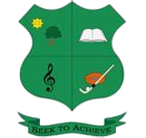
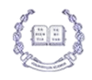
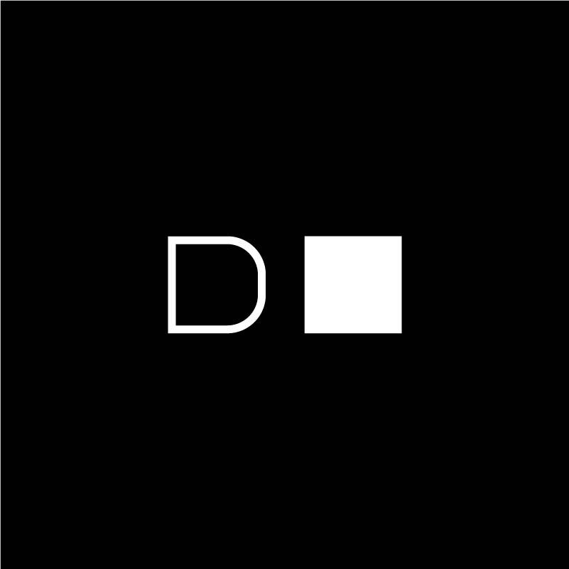
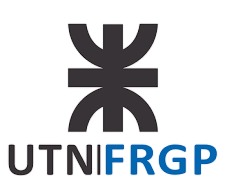
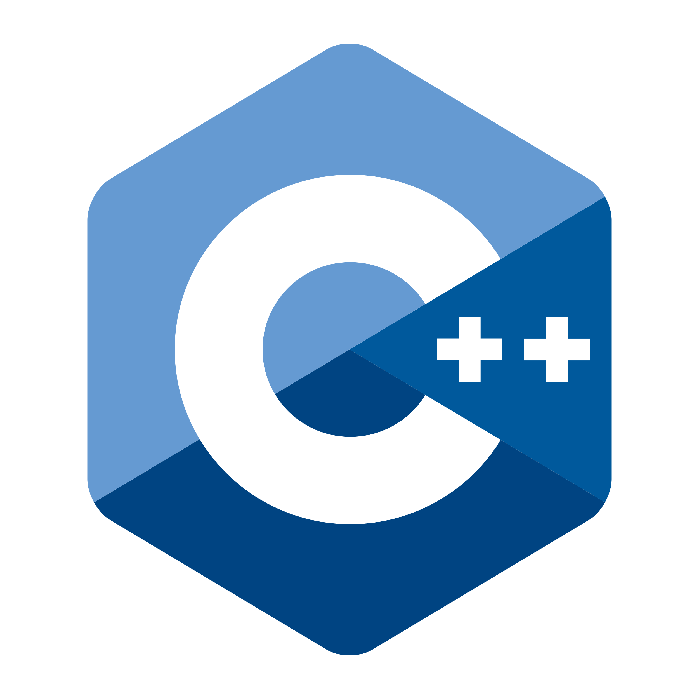
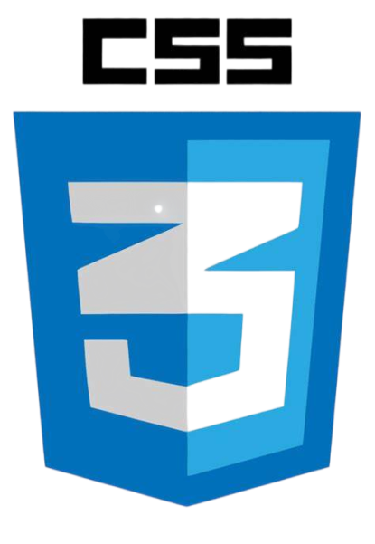
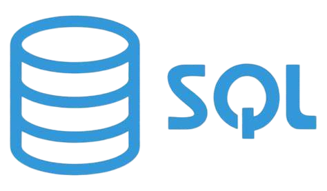
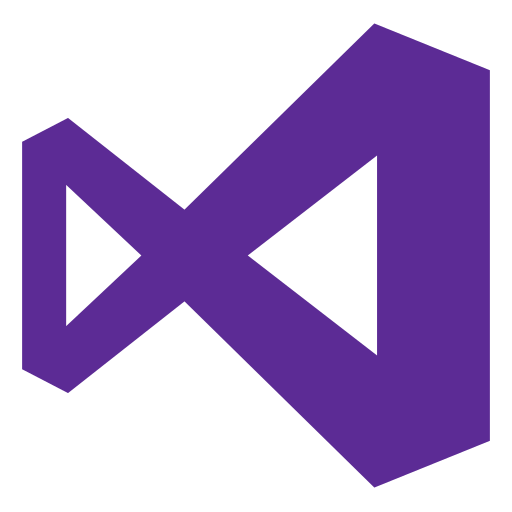

Sobre mí
Soy un estudiante Argentino de 20 Años en la Tecnicatura de Programación desde febrero de 2023.
Terminé la secundaria en 2022, egresando como Bachiller en Economía y Administración.
En septiembre de 2022,comencé un curso de programación en Digital House.
En Dicho Curso mi objetivo era empezar a familiarizarme con el mundo de la programación,ya que rápidamente descubrí que era el área en la que quería desarrollarme profesionalmente.
Despues de descubrir que Digital House no cumplio con mis expectativas, opte inscribirme con 18 años en la Tecnicatura Universitaria en Programación en la UTN, donde actualmente continúo formándome.
En el futuro mi objetivo es tambien de desarrollar aplicaciones web, poder llegar a desacrollar tanto para Android como para IOS .

Mis Instituciones

Farmingdale Collage
2005-2011
Dover High School
2011-2014

Colegio Los Alamos
2015-2022

Digital House
2022

UTN Pacheco
2023 - Presente
Tecnologías








Mis Proyectos
Forza Horizon 5 Helper
Pagina Web Donde se Podran Ver Los Autos donde se pueden Obtener Super Wheelspins e podras descubrir que vehiculos contienen otros, todo esto para el Famoso Juego "Forza Horizon 5"